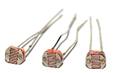
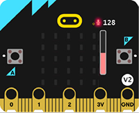
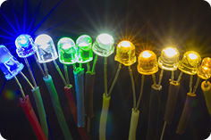
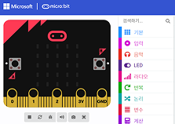

개념 알고 가기
피지컬 컴퓨팅 시스템의 이해
- 1 피지컬 컴퓨팅 시스템
- 하드웨어와 소프트웨어를 이용해 실제 환경과 상호 작용하는 물리적 시스템이다.
- 하드웨어 부분인 입력 장치, 처리 장치, 출력 장치와 이를 제어하는 소프트웨어로 구성된다.
- 2 피지컬 컴퓨팅 시스템의 구성
-
입력 장치주변 환경 정보를 받아들이는
장치이다.
예시: 각종 센서 -
처리 장치입력 받은 정보를 프로그램을
통해 처리하는 장치이다.
예시: 마이크로비트 -
출력 장치명령어에 의해 움직이거나
반응하는 장치(구동기)이다.
예시: LED -
소프트웨어하드웨어를 제어한다.
예시: 엔트리, 메이크코드
피지컬 컴퓨팅 시스템은 입력, 처리, 출력 장치와
이를 제어하는 소프트웨어로 구성된다.
이를 제어하는 소프트웨어로 구성된다.